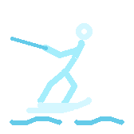
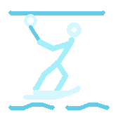
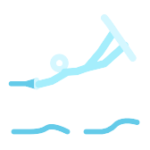
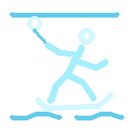
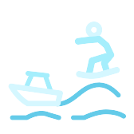
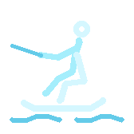
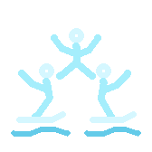

Вейк-клуб Fenix
Карамышевская набережная, 13, стр. 2 · Хорошёво-Мнёвники
Водные лыжи, вейкборд, вейксерф и WakeSkim.
Федерация воднолыжного спорта города Москвы
Найдите секцию, проверьте расписание и запишитесь на первое занятие.

Водные лыжи Слалом, фигуры, прыжки, многоборье Правила
Водные лыжи на электротяге Слалом, фигуры, прыжки Бассейн Правила
Вейкборд за катером Правила
Вейкборд на электротяге Включая вейкскейт Бассейн Правила
Wakesurf (доска длинная) Wakeskim (доска короткая) Правила
Адаптивные воднолыжные дисциплины Водные лыжи (слалом, фигурное катание, трамплин) Вейкборд на электротяге (сидячий вейкборд) Вейксерф (Wakesurf) Правила
Воднолыжное шоуФВЛС Москвы · карта возможностей
От первых занятий и соревнований — к спортивным достижениям и новым возможностям.
Brisbane 2032 · стратегическая цель

Слалом · фигуры · прыжки с трамплина · многоборье · вейкборд за катером и на электротяге · вейксерф · скиджоринг

Город регион межрегиональные старты и ЕКП Кубок и чемпионат России первенство и чемпионат Европы мир и Всемирные игры
Возрастные и открытые категории: U15, U19, Open, Masters, Veterans — в зависимости от положения старта.
Возраст, дисциплину и условия присвоения разряда проверяйте по действующей ЕВСК и положению соревнований.
Допуск и протокол представление приказ о присвоении подтверждение звания и знак при наличии права. Отбор в сборную и выплаты зависят от установленных условий.
Портфолио → партнёр → бартер или гонорар → спецпроекты → отчёт о результатах
Судья III → II → I категории → всероссийская категория → международная практика

Тренер → II → I → высшая категория → старший тренер → тренер сборной → Заслуженный тренер России
В дисциплине «катер — прыжки с трамплина» измеряют дальность прыжка в метрах. Разряды можно выполнить с 9 лет на официальных соревнованиях любого статуса.
Дальность прыжка от 13 м по мужскому нормативу, от 11 м по женскому.
Дальность прыжка от 16 м по мужскому нормативу, от 13 м по женскому.
Примеры по занятым местам для мужчин и женщин в вейкборде за катером и на электротяге, Wakesurf и Wakeskim. В слаломе, прыжках и фигурном катании применяются свои нормы по буям, метрам или очкам.
Чемпионат муниципального образования
Чемпионат муниципального образования
Чемпионат субъекта РФ
Другие межрегиональные соревнования, включённые в ЕКП
Кубок России. 1-е место среди мужчин или женщин. При двух и более этапах учитывается финал.
Чемпионат России. Среди мужчин и женщин — 1-е место или 2-е место дважды в течение трёх лет. В мужском зачёте ПОДА на электротяге нужно выиграть чемпионат России два года подряд или Кубок России два года подряд.
Пример для водных лыж. В прыжках за катером норматив на МС составляет 46 м по мужскому нормативу и 37 м по женскому. Статус соревнований — не ниже Кубка России.
Кубок и чемпионат России в ЕВСК · PDFЧемпионат мира. 1–4-е места среди мужчин и женщин в четырёх дисциплинах выше. В мужском ПОДА-вейкборде на электротяге — 1–2-е места.
Чемпионат Европы. 1–3-е места среди мужчин и женщин в вейкборде за катером и на электротяге. В мужском ПОДА-вейкборде на электротяге — 1-е место.
Чемпионат Европы в ЕВСК · PDFВ вейкборде за катером и на электротяге, Wakesurf и Wakeskim эти места дают возможность выполнить требование на МС юниорам и юниоркам до 19 лет, а на КМС — юношам и девушкам до 15 лет. Минимальный возраст для МС — 13 лет, для КМС — 11 лет.
Первенство Европы в ЕВСК · PDFВозраст, дисциплина и условия выполнения проверяются по полной таблице ЕВСК. ЕКП — Единый календарный план Минспорта.
Что сделать для присвоенияПочётное спортивное звание
Почётное спортивное звание
Ведомственная награда Минспорта
Государственная награда. Среди оснований — особые заслуги в развитии спорта.
Местные старты по календарю.
Областные и другие региональные старты. Для Москвы этот уровень включает чемпионат и первенство города.
Федеральный округ и другие форматы, если они есть в календаре.
Чемпионат, первенство и Кубок России.
Чемпионаты Европы и Азии. Чемпионат и возрастные первенства мира.
Отбор. Допуск определяет регламент старта. Результаты официальных соревнований учитывают при отборе в сборную России.
Участие возможно при включении дисциплины в программу конкретных Игр.
В программе представлены водные лыжи и вейкборд.
IWWF и национальные федерации продвигают водные лыжи и вейкборд как кандидатов на включение в программу Игр «Брисбен-2032». Включение пока не утверждено; решение принимает МОК.
Чтобы заинтересовать партнёра, подготовьте портфолио и план сотрудничества. Мы рекомендуем действовать по этим шагам.
Опишите свою аудиторию и предложите партнёру контент с экипировкой, участие в событиях и отчёт по охвату или заявкам.
Обсудите гонорар, экипировку, время тренировок или оплату поездок. Для бартера зафиксируйте стоимость поддержки, объём контента, сроки и права на публикацию.
Запишите уровень турнира и сумму за каждое место. Для бонуса за разряд укажите нужную квалификацию и подтверждение приказом о присвоении.
Сверьте оклад, премии и условия повышения за результат или разряд с трудовым договором и системой оплаты работодателя. Коэффициенты Москомспорта
Сверьте образование и опыт с профстандартом. Для второй, первой или высшей категории тренера соберите результаты учеников и подтверждения повышения квалификации. Тренеры-преподаватели проходят педагогическую аттестацию.
Для отбора в сборную Москвы нужны профильное образование и участие в подготовке спортсменов высокого класса. Критерии отбора
Образование и профстандарты · Категории № 224 · Аттестация № 196 · Заслуженный и Почётный тренер России
В учреждениях Москомспорта повышенный норматив оплаты за одного спортсмена может составить до 100% ставки за 1–3-е места на чемпионате России или победу в Кубке России и до 150% ставки за 1–3-е места на чемпионате мира или Европы.
Норматив действует 12 месяцев по лучшему результату при работе со спортсменом от года и продолжении подготовки. Для адаптивной подготовки действует таблица 5б. За почётное звание возможна отдельная выплата.
На официальных выездах тренерам сборной Москвы обеспечивают проезд, проживание, питание и экипировку в пределах бюджета. Ежемесячное вознаграждение определяет трудовой договор при его наличии. Положение № 146, пункт 3.1
Социально ориентированная НКО может подать заявку на частичное возмещение расходов на спортивную программу в Москве, например на адаптивную группу. Москва № 534-ПП, приложение 3
Доход дают занятия, сборы и мастер-классы. С клубом можно согласовать ставку за занятие или группу и премию за оговорённый результат ученика.
С брендом согласуйте гонорар, экипировку или время на воде за мастер-класс. Укажите, кто оплачивает катер, тягу и оборудование.
Откройте строку своей дисциплины в ЕВСК и вместе с тренером сверьте возраст, разряд и условия старта. Ссылки открывают приложение 13 к приказу Минспорта № 299 в PDF.
Строки чемпионата субъекта РФ.
Таблицы требований для вейк-дисциплин по статусу старта и возрасту
Проверьте официальный статус турнира, условия допуска и срок заявки у организатора.
Выполните норматив или требование по месту. Проверьте результат и документы о составе судейской коллегии.
Заполните представление вместе с тренером или федерацией. Срок подачи — четыре месяца с даты выполнения нормы или требования.
Скачать шаблон представления · DOCXМС и МСМК оформляются по процедуре присвоения спортивных званий. Перечень документов и кто подаёт представление указаны в Положении о ЕВСК.
Скачать ЕВСК и правилаЗа само присвоение спортивного разряда или звания федеральная прибавка к пенсии и окладу не установлена. Оклад, надбавки и премии зависят от трудового договора и системы оплаты работодателя. ТК РФ, статья 135 · Статья 348.2
Москомспорт рекомендует коэффициенты к минимальному должностному окладу для сотрудников на должностях «спортсмен» и «спортсмен-инструктор» в подведомственных учреждениях. Примеры ниже относятся к индивидуальным дисциплинам.
Размер устанавливает учреждение в своей системе оплаты. За звания и награды возможны отдельные стимулирующие выплаты по её условиям. Москомспорт · распоряжение № 124 от 6 мая 2026 года, таблица 2 и пункт 2.10.5
Баллы при поступлении. В училище олимпийского резерва Иркутска при поступлении на «Физическую культуру» в 2026/27 году к вступительным баллам добавляли 2 балла за действующий I разряд, 3 за КМС и 4 за МС или МСМК. ТУСУР в 2026 году начислял 4 конкурсных балла за КМС, МС или МСМК. Правила училища · Правила ТУСУР
Будем стремиться выстроить систему спонсорской поддержки с бонусами за спортивные результаты и оплатой спецпроектов.
Суммы условные. Размер бонуса, турниры, призовые места и оплату спецпроектов стороны определяют в договоре.
Пример. Второе место на чемпионате России — 18 000 ₽. Выполненный спецпроект — 15 000 ₽. Вместе — 33 000 ₽. С разовым бонусом 5 000 ₽ за КМС, если он указан в договоре, выплата составит 38 000 ₽. Спортивный оклад рассчитывается по трудовому договору.
| Уровень старта | 1-е | 2-е | 3-е |
|---|---|---|---|
| Местный | 10 000 | 6 000 | 3 000 |
| Региональный | 15 000 | 9 000 | 4 500 |
| Межрегиональный | 20 000 | 12 000 | 6 000 |
| Чемпионат, Кубок или первенство России | 30 000 | 18 000 | 9 000 |
| Чемпионат Европы или Азии | 40 000 | 24 000 | 12 000 |
| Чемпионат или первенство мира | 60 000 | 36 000 | 18 000 |
Платформа спонсорской и иной поддержки ФВЛС Москвы находится в разработке.
КМС — кандидат в мастера спорта. МС — мастер спорта России. МСМК — мастер спорта России международного класса.
Для допуска на чемпионат России 2026 года по слалому, фигурному катанию и прыжкам нужны заявка сборной субъекта и результат по нормам допуска на официальном старте уровня субъекта или выше. ФВЛС формирует сборную России из списка кандидатов.
Официальные локации ФВЛС Москвы
Вейкборд
Москва, ул. Новоостаповская, 5, стр. 2
Крытый вейк-парк с занятиями для детей и взрослых.
Бассейн
Москва, Сиреневый бульвар, 2, стр. 1А
Тренировки на лебёдке в бассейне РГУФК.
ФВЛС & LOADED & MyWave & РГУФК
О платформе FVLSchoolВейкборд
Москва, ул. Исаковского, 37, корп. 2, стр. 1
Строгино Wake Park, занятия на открытой воде.
Доступные даты уточняйте в вейк-парке Расписание и запись +7 (925) 734-34-38 Контакты вейк-паркаВейксерф · WakeSkim
Московская область, Рузский округ, д. Нововолково
Занятия за катером на Озернинском водохранилище рядом с остановкой «Родник».
Спот MyWave на Яндекс Картах Время согласует команда MyWave Расписание и запись +7 (916) 011-71-79 Контакты MyWaveВейксерф · вейкборд
Москва, Карамышевская набережная, вл. 13, корп. 2
Клуб у Живописного моста. Среди форматов катания — вейк-лонгборд и вейк-фойл.
Доступное время есть в календаре клуба Расписание и запись +7 (995) 788-33-44 Сайт LOADED SPOTАдрес и даты занятий на Уче уточняйте у команды LOADED.
Контакты LOADED
Площадки Москвы и других регионов. Полная карта откроется в новой вкладке.
Карамышевская набережная, 13, стр. 2 · Хорошёво-Мнёвники
Водные лыжи, вейкборд, вейксерф и WakeSkim.
По этим фильтрам площадок пока нет.
Опубликованные точки в административных границах Москвы по данным на . Уточняйте режим работы у площадок.
Данные предоставляют SpotMap и © OpenStreetMap.
Сведения о записи взяты с сайтов организаторов. Фото иллюстративные.
Соревнования, встречи, сборы и другие события воднолыжного спорта. Даты сезона 2027 появятся после подтверждения.
В этом месяце в календаре пока нет событий.
Вейкборд-электротяга · SportStation
Вейкборд и ПОДА-вейкборд на электротяге · SportStation
Встреча и вопросы к руководству федерации по программе Осеннего кубка · SportStation
Награждение по программе Осеннего кубка · SportStation
Вейкборд-катер · Ривер Спейс
Слалом, фигуры и прыжки с трамплина · Воднолыжный клуб «Вега»
Спортсмены встретились в крытом вейк-парке SportStation на заключительном старте сезона по вейкборду-электротяге.
Страница соревнованийФВЛС России подвела итоги выступления спортсменов в вейксерфе и вейкскиме.
В «Ривер Спейс» выступили спортсмены из разных регионов страны.
Выберите площадку и свяжитесь с клубом, чтобы подобрать время и уточнить, что взять с собой.